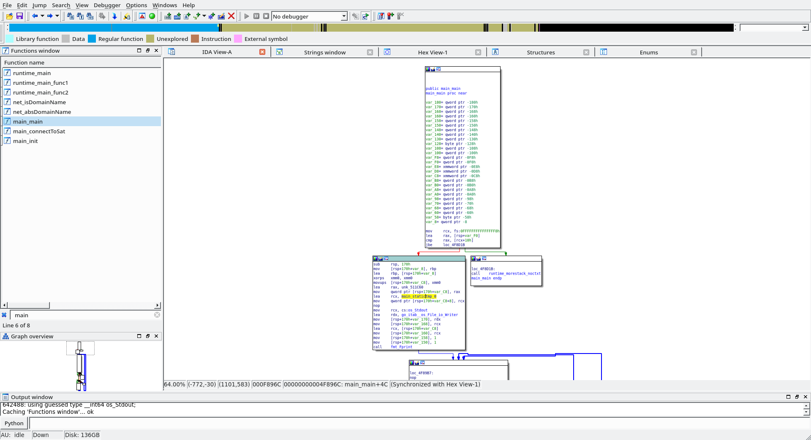

GoogleCTF Beginner's Quest 2019 - Satellite // Introduction to Reversing Go Binaries
I picked the binary of the challenge satellite from Google CTF beginner’s quest 2019 as a first target to learn go reversing.
Description
Placing your ship in range of the Osmiums, you begin to receive signals. Hoping that you are not detected, because it’s too late now, you figure that it may be worth finding out what these signals mean and what information might be “borrowed” from them. Can you hear me Captain Tim? Floating in your tin can there? Your tin can has a wire to ground control? Find something to do that isn’t staring at the Blue Planet.
$ file *
init_sat: ELF 64-bit LSB executable, x86-64, version 1 (SYSV), dynamically linked, interpreter /lib64/ld-linux-x86-64.so.2, Go BuildID=YhfyV09rKV_0ewkLiNr1/6ZJO5J8awFQSRgZDzlnA/zvyuoO7Qu3ralSU_Aheb/QK0rATh0jzljJY8j2313, not stripped
README.pdf: PDF document, version 1.5
$ strings init_sat > init_sat.strings
$ ls -lh init_sat
-rw-r--r-- 1 kylma users 3.2M Dec 31 1979 init_sat
One noticeable thing about init_sat is its size, 3.2M is really phat. This might be a hint that it’s not a classical C binary. I googled some of the strings found in the binary like split stack overflow and I found out these are specific to go binaries… So now, we know why it’s so phat: it’s a go binary and they bundle the entire universe in every binary.
Test run of the binary:
$ ./init_sat
Hello Operator. Ready to connect to a satellite?
Enter the name of the satellite to connect to or 'exit' to quit
lolilol
Unrecognized satellite: lolilol
Enter the name of the satellite to connect to or 'exit' to quit
aaaaaaaaaaaaaaaaaaaaaaaaaaaaaaaaaaaaaaaaaaaaaaaaaaaaaaaaaaaaaaaaaaaaaaaaaa
Unrecognized satellite: aaaaaaaaaaaaaaaaaaaaaaaaaaaaaaaaaaaaaaaaaaaaaaaaaaaaaaaaaaaaaaaaaaaaaaaaaa
Enter the name of the satellite to connect to or 'exit' to quit
exit
Exiting, goodbye
When loaded in IDA… the thing has 2807 functions identified… It’s gonna be one hell of a needle in a haystack. But at least, it’s not stripped and we have the function names…
Calling Convention
Before we dig any further, we need to study the go calling convention. I highly recommend “The Go low-level calling convention on x86-64” from Raphael ‘kena’ Poss, which contains everything you ever wanted to know about the go calling convention.
Key points:
- Return values are not in registers but on stack
- Arguments are passed on the stack
Finding main
Searching for the main function in IDA function’s list yields:
- runtime_main
- runtime_main_func1
- runtime_main_func2
- net_isDomainName
- net_absDomainName
- main_main –> the real main function
- main_connectToSat –> sounds interesting
- main_init
main_main

There is a first call to fmt_fprint, the go equivalent of printf(). One of the argument of fmt_Fprint is that mysterious main_statictmp_0. It seems to be a variable with an address pointing to a string. Note that the string is not recognized as it should be. Click on unk_54C05C and press a to obtain a proper string.
List of static strings:
| Variable name | Content |
|---|---|
| main_statictmp_0 | Hello Operator. Ready to connect to a satellite? |
| main_statictmp_1 | Enter the name of the satellite to connect to or exit to quit |
| main_statictmp_2 | Exiting, goodbye |
| main_statictmp_3 | Can’t connect to the satellite. Please contact the Google CTF team. |
IDA has troubles recognizing correctly all the strings, because most of them are not terminated at all. For example, main_statictmp_2 is actually Exiting, goodbyeGC worker (idle)GODEBUG: value "Imperial_AramaicI (...).
Satellite Name
Let’s follow the cross-references (x) to main_statictmp_1, which is the string prompting us for a satellite name.
- [highlighted in blue]
Enter the name of the satellite to connect to or exit to quitis printed. - [highlighted in purple] User input is retrieved in
var_160, whilevar_158is the length of the input. - [highlighted in red] If the user input is equal to
exit, then printExiting, goodbyeand exit. - [highlighted in orange] If the user input is equal to
osmifollowed byum, callmain_connectToSat.
And we found the satellite name, osmium /o/, let’s test it:
$ ./init_sat
Hello Operator. Ready to connect to a satellite?
Enter the name of the satellite to connect to or 'exit' to quit
osmium
Establishing secure connection to osmium
satellite...
Welcome. Enter (a) to display config data, (b) to erase all data or (c) to disconnect
a
Username: brewtoot password: ******************** 166.00 IS-19 2019/05/09 00:00:00 Swath 640km Revisit capacity twice daily, anywhere Resolution panchromatic: 30cm multispectral: 1.2m Daily acquisition capacity: 220,000km² Remaining config data written to: https://docs.google.com/document/d/14eYPluD_pi3824GAFanS29tWdTcKxP_XUxx7e303-3E
b
Insufficient privileges.
c
Disconnecting, goodbye.
Enter the name of the satellite to connect to or 'exit' to quit
That’s it for the introduction to go reversing! Next section is the end of the challenge if you’re curious.
Satellite Config Data
The Google Docs URL contains some base64 data:
They can be decoded with base64:
$ echo "VXNlcm5hbWU6IHdpcmVzaGFyay1yb2NrcwpQYXNzd29yZDogc3RhcnQtc25pZmZpbmchCg==" | base64 -d
Username: wireshark-rocks
Password: start-sniffing!
Ohohoh, let’s take out wireshark then, maybe we can catch the hidden password in wireshark.
To avoid looking for the needle in a haystack in wireshark, it would be great if we knew the port/address used init_sat. You will need two terminals and an open Wireshark. Ready?
Start capturing on the any interface in Wireshark!
In a first terminal, run init_sat and display the config data:
$ ./init_sat
Hello Operator. Ready to connect to a satellite?
Enter the name of the satellite to connect to or 'exit' to quit
osmium
Establishing secure connection to osmium
satellite...
Welcome. Enter (a) to display config data, (b) to erase all data or (c) to disconnect
a
Username: brewtoot password: ******************** 166.00 IS-19 2019/05/09 00:00:00 Swath 640km Revisit capacity twice daily, anywhere Resolution panchromatic: 30cm multispectral: 1.2m Daily acquisition capacity: 220,000km² Remaining config data written to: https://docs.google.com/document/d/14eYPluD_pi3824GAFanS29tWdTcKxP_XUxx7e303-3E
In a second terminal, run netstat to find the port/address used by init_sat:
$ netstat -peanut | grep init_sat
(Not all processes could be identified, non-owned process info
will not be shown, you would have to be root to see it all.)
tcp 0 0 172.30.24.53:37836 34.76.101.29:1337 ESTABLISHED 1000 3294510 3095/./init_sat
Use that IP to filter in Wireshark with ip.addr == 34.76.101.29:
Tadaaa, here’s the flag: CTF{4efcc72090af28fd33a2118985541f92e793477f} ! (right click > Follow TCP Stream, it’s easier to copy the entire flag).
Takeaways
- Don’t get lost in all the functions of go’s runtime.
- The calling convention is definitely weird, get familiar with it as quickly as possible.